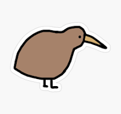
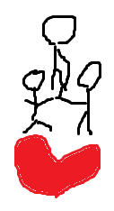

MEESKONNA SLOGANMEESKONNA LOGO |
Tahvel on pask |
Tahvel on halb kuna sealt on raske leida informatsiooni, õpetajate kodutööd ei lähe mõnikord üles ja tunniplaani ei ole näha. Lisaks see on aeglane, peab sisselogima id-ga ning kui sa afk 2min see viskab sind välja. ekool on parem.
Oleme Nirgod |
Hetkel, kui tahame teada oma kooli tunniplaani, peame minema ....... to doo